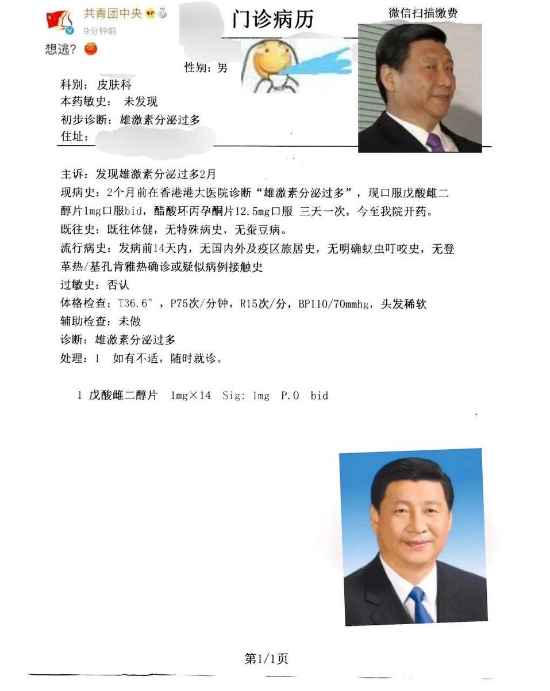
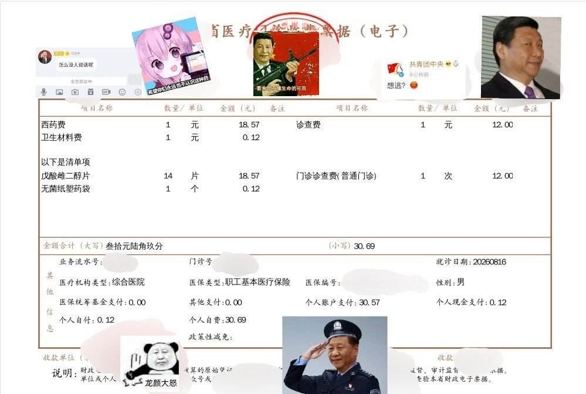

サイバー環状線
@CyberKanjousen
@ATRI_5201314 迫 真 贴 纸
（不过实际上墙内打码之后该搬还是一样搬……


往生堂贵宾一位
@ATRI_5201314
全网估计没有我这种男证非跨性别处方开出补佳乐处方并医保付费的案例吧？！
（为保护开药医院和医生，处方和发票已做打码和贴纸处理，仅为做防搬运墙内和恶意举报的无奈之举，与本人政治立场无关） https://t.co/mQR3Bsa8XH